# Debemos tener en cuenta que la prueba tiene
# la corrección de Yates activa por defecto.
# Debemos modificar el argumento correct si
# deseamos activarla o desactivarla.
chisq.test(x, correct = TRUE)La prueba de chi cuadrado es una prueba estadística sencilla que puede ser usada cuando se tienen datos de recuento de ocurrencias de categorías. El análisis puede ser definido como una:
Prueba de diferencia de conteos: para identificar si los conteos observados en las categorías de una variable son estadísticamente diferentes entre sí.
Prueba de diferencia de conteos con probabilidades específicas: identifica si los conteos observados en las categorías de una variable son estadísticamente diferentes entre sí dado que cada evento tiene una probabilidad de ocurrencia definida. Se debe especificar las probabilidades como un vector en el argumento
pde la función. Para fines de este tutorial no veremos el detalle de esta prueba.Prueba de independencia de dos factores: identifica a nivel estadístico si las categorías de dos variables están asociadas o son independientes.
En R, la función nativa básica para el cálculo de esta prueba es:
Video explicativo
Librarías de Trabajo
El siguiente código sirve para instalar las librerías a usar:
install.packages("tidyverse")
install.packages("corrplot")
install.packages("vcd")
install.packages("DescTools")
install.packages("CGPfunctions")Ahora, activa las librerías:
library(tidyverse)
library(corrplot)
library(vcd)
library(DescTools)
library(CGPfunctions)Tablas de ejemplo
Trabajaremos con dos tipos de tablas para realizar los ejemplos:
- Tabla de contingencia de dos factores.
# Tabla de contingencia de dos factores.
# Nivel (de 0 al 3) vs Grado (de 1 al 5).
url1 <- "https://raw.githubusercontent.com/irwingss/ArchivosCuestionarios/main/Matriz%20Grados.csv"
grados <- read.csv(url1)
# Visualizar
grados Grado1 Grado2 Grado3 Grado4 Grado5
1 2900 392 932 1812 2854
2 522 421 574 917 1247
3 5678 8126 1171 1478 2040
4 3719 2975 2811 1704 2244- Tabla larga con los valores de ocurrencia las categorías.
# Tabla larga con los valores de ocurrencia las categorías
url2 <- "https://raw.githubusercontent.com/irwingss/ArchivosCuestionarios/main/tabla_larga_chi_cuadrado.csv"
dataMejora <- read.csv(url2)
# Visualizar primeras 20 filas
head(dataMejora,20) treatment improvement
1 treated improved
2 treated improved
3 not-treated improved
4 treated improved
5 treated not-improved
6 treated not-improved
7 not-treated not-improved
8 treated not-improved
9 not-treated improved
10 treated improved
11 not-treated improved
12 not-treated not-improved
13 not-treated not-improved
14 not-treated not-improved
15 not-treated improved
16 not-treated improved
17 treated improved
18 treated improved
19 not-treated not-improved
20 not-treated not-improved- Como dato adicional, si deseas transformar una matriz de contingencia a tabla larga (e.g., convirtamos
gradosen tabla larga), puedes usar el siguiente código:
# Si deseas reutilizar este código, solo cambia las etiquetas:
# grados y categoría por el nombre de las dos factores de tu interés
grados%>%
as.data.frame() %>%
rownames_to_column() %>%
gather(Grados, valores, -rowname) %>%
rowwise() %>%
mutate(valores = list(1:valores)) %>%
unnest(valores) %>%
select(-valores) %>%
rename(Nivel = rowname) -> gradosLarga
# Visualizar el tibble
View(gradosLarga)Chi cuadrado para conteos
Se desea evaluar si existe diferencia entre la cantidad (recuento) de las personas inscritas en todos los grados para el primer nivel de la tabla grados podemos hacer un test de chi cuadrado sencillo:
# Separar la base de datos de grados
inscritos <- grados[1,]
inscritos Grado1 Grado2 Grado3 Grado4 Grado5
1 2900 392 932 1812 2854# Realizar la prueba chi cuadrado
resX2 <- chisq.test(inscritos, correct = F)# Inspeccionar los valores esperados
resX2$expected[1] 1778 1778 1778 1778 1778# Inspeccionar los valores observados
resX2$observed[1] 2900 392 932 1812 2854# Ver los resultados de la prueba
resX2
Chi-squared test for given probabilities
data: inscritos
X-squared = 2842.8, df = 4, p-value < 2.2e-16Las hipótesis a contrastar son:
H0: no existe diferencia entre los recuentos de las personas inscritos en los grados.
Ha: existe diferencia entre los recuentos de las personas inscritos en los grados.
El p-valor < 2.2e-16 es menor a el p-valor crítico de 0.05, por lo que se rechaza H0, y decimos que existe diferencia entre los recuentos de las personas inscritas en los diferentes grados evaluados.
Chi cuadrado de independencia de dos factores
Es el uso más típico de la prueba es el contrastar si los niveles de dos factores, es decir, de dos variables categóricas, son independientes o existe evidencia estadística de asociación entre ellas.
Las hipótesis a contrastar son:
H0: las variables son independientes.
Ha: las variables son dependientes.
Veamos si existen diferencias entre los factores en los dos ejemplos cargados
# Para matrices de contingencia (niveles vs grados)
chisq.test(grados, correct = FALSE)
Pearson's Chi-squared test
data: grados
X-squared = 8885.1, df = 12, p-value < 2.2e-16El p-valor < 2.2e-16 es menor a el p-valor crítico de 0.05, por lo que se rechaza H0, y decimos que existe dependencia entre las variables niveles y grados.
# Para tablas largas sin transformar
# (treatment vs improvement)
with(dataMejora, chisq.test(treatment, improvement, correct = FALSE))
Pearson's Chi-squared test
data: treatment and improvement
X-squared = 5.5569, df = 1, p-value = 0.01841# Para tablas largas convertidas a matrices de
# contingencia (treatment vs improvement)
matrizDesdeTablaLarga <- table(dataMejora) chisq.test(matrizDesdeTablaLarga, correct = FALSE)
Pearson's Chi-squared test
data: matrizDesdeTablaLarga
X-squared = 5.5569, df = 1, p-value = 0.01841El p-valor < 0.01841 es menor a el p-valor crítico de 0.05, por lo que se rechaza H0, y decimos que la mejora (improvement) y el tratamiento (treatment) son dependientes.
Corrección de Yates
Es buena práctica realizar la prueba de Chi cuadrado sin corrección, observar los valores esperados y detectar si alguno de ellos es menor a 5. Si eso ocurre, se debe aplicar la corrección de Yates para corregir el cálculo del p-valor.
# Para ver los valores esperados se tiene que
# guardar la prueba como un objeto en el ambiente
resGrados <- chisq.test(grados, correct = FALSE)
resMejora <- with(dataMejora, chisq.test(treatment, improvement, correct = FALSE))
# Luego, se inspecciona el objeto con $expected
resGrados$expected Grado1 Grado2 Grado3 Grado4 Grado5
[1,] 2559.941 2379.214 1095.9481 1180.4207 1674.4760
[2,] 1059.971 985.139 453.7891 488.7659 693.3348
[3,] 5325.196 4949.246 2279.7939 2455.5141 3483.2492
[4,] 3873.891 3600.401 1658.4690 1786.2992 2533.9400resMejora$expected improvement
treatment improved not-improved
not-treated 31.95238 23.04762
treated 29.04762 20.95238# Incluso convertir esto a una prueba lógica
# TRUE significa que el valor es mayor de 5
resGrados$expected > 5 Grado1 Grado2 Grado3 Grado4 Grado5
[1,] TRUE TRUE TRUE TRUE TRUE
[2,] TRUE TRUE TRUE TRUE TRUE
[3,] TRUE TRUE TRUE TRUE TRUE
[4,] TRUE TRUE TRUE TRUE TRUEresMejora$expected > 5 improvement
treatment improved not-improved
not-treated TRUE TRUE
treated TRUE TRUEEn ambos casos presentados no es necesario realizar la corrección de Yates.
Categorías que más contribuyen al score de la prueba
Se puede conocer cuál es el aporte al score de Chi Cuadrado de cada categoría en las dos variables contrastadas visualizando los residuales (diferencia entre el valor esperado y el observado) en cada casilla.
# Resultados textuales
round(resGrados$residuals, 3) Grado1 Grado2 Grado3 Grado4 Grado5
[1,] 6.721 -40.741 -4.952 18.383 28.825
[2,] -16.524 -17.974 5.643 19.370 21.027
[3,] 4.835 45.156 -23.222 -19.727 -24.454
[4,] -2.489 -10.423 28.301 -1.947 -5.760# Gráfica de contribución
corrplot::corrplot(resGrados$residuals, is.cor = FALSE,
method = "color", addgrid.col=F,
tl.col = "black")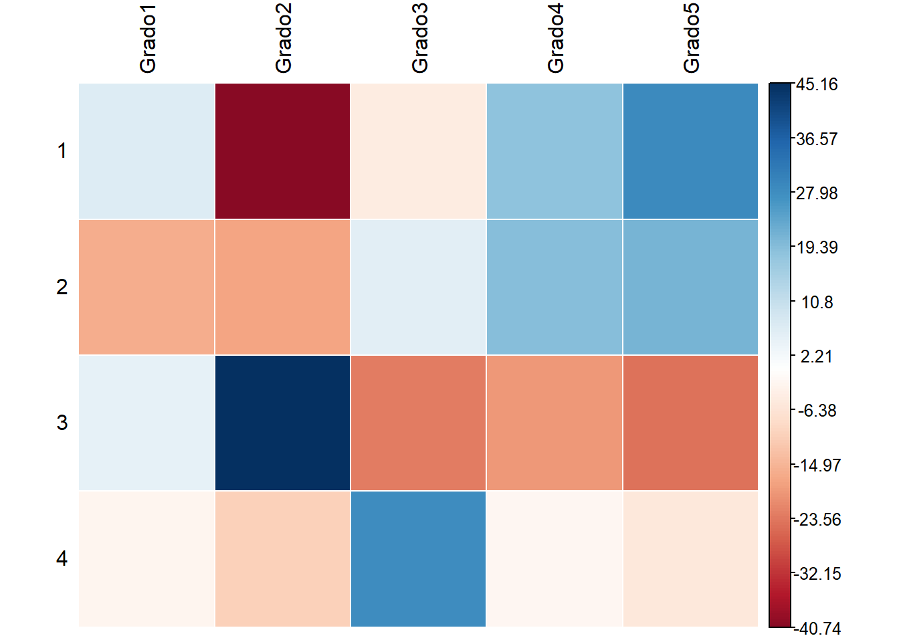
Gráficos de Mosaico
# Gráfico de mosaico simple
vcd::mosaic(~ Nivel, data=gradosLarga)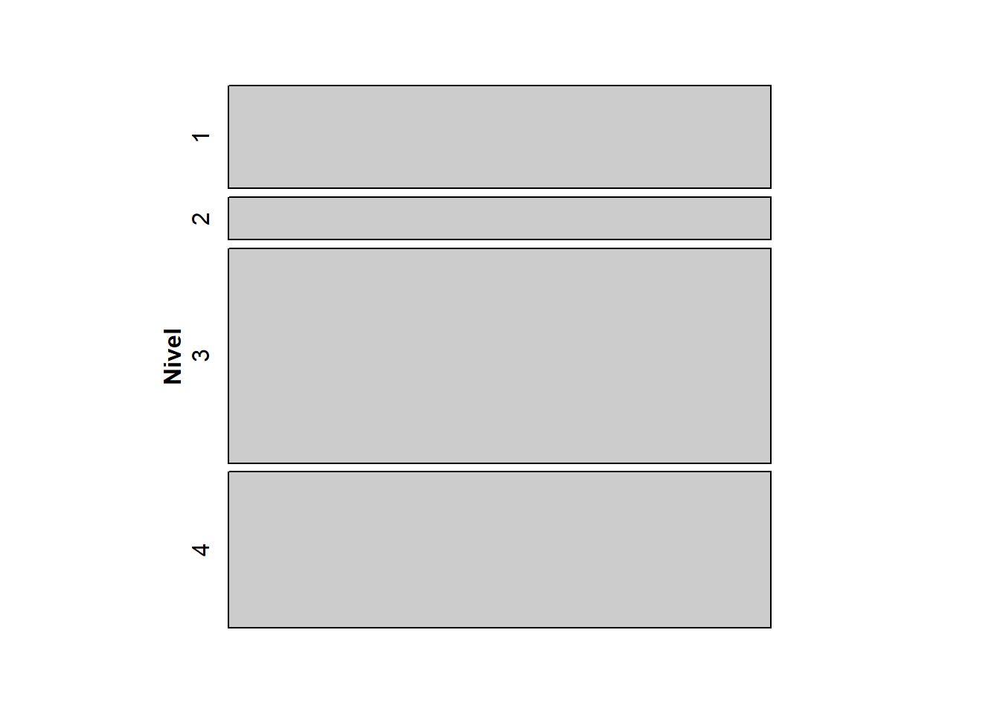
vcd::mosaic(~ Grados, data=gradosLarga)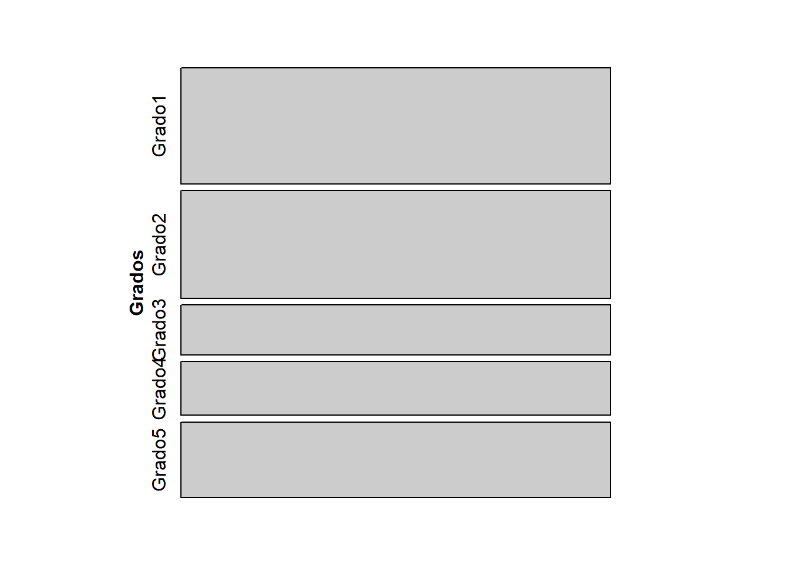
# Gráfico de mosaico para ambas variables
vcd::mosaic(Grados~ Nivel, data=gradosLarga)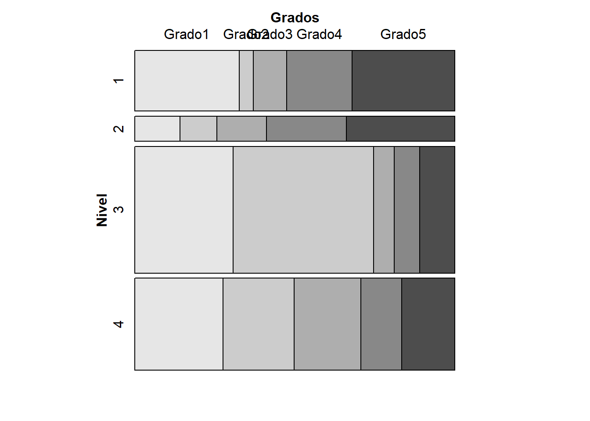
vcd::doubledecker(Grados~Nivel, data=gradosLarga)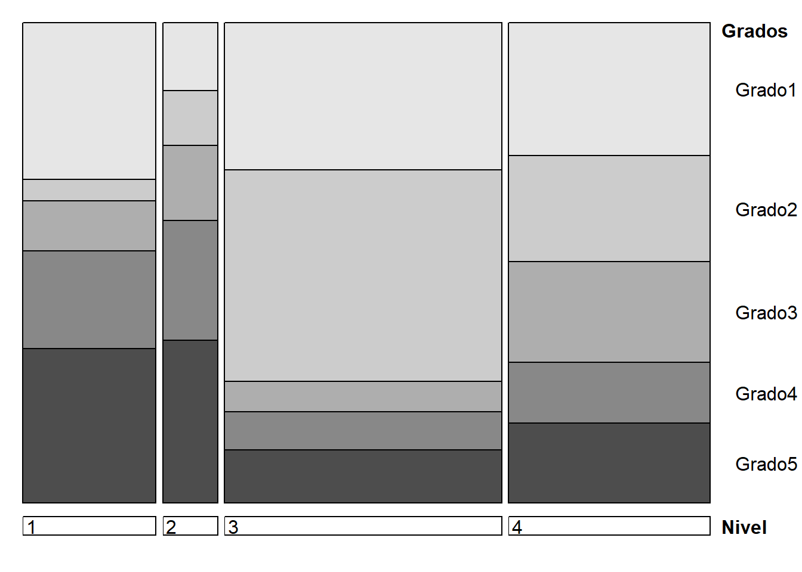
# Gráfico de mosaico para ambas variables sombreado por su nivel de aporte
vcd::mosaic(~ Nivel + Grados,
direction = c("v", "h"),
data = gradosLarga,
shade = TRUE,
spacing = vcd::spacing_equal(sp = unit(0.3, "lines")))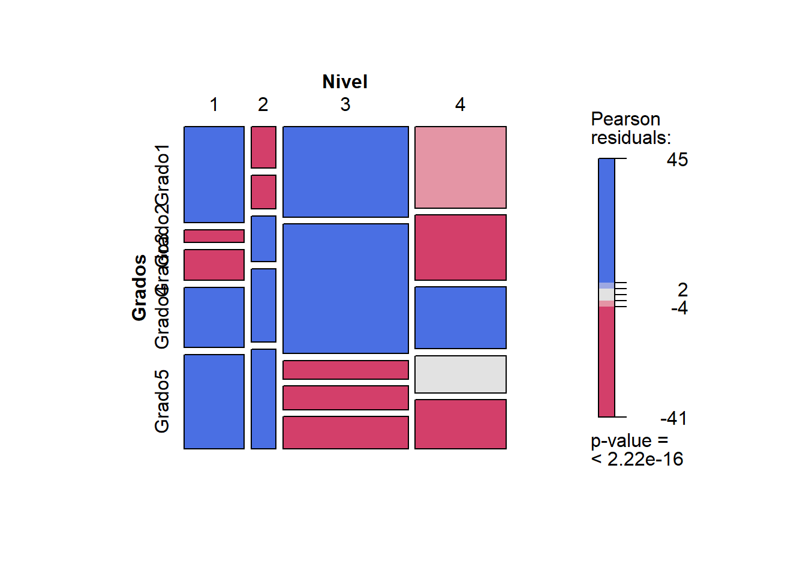
Nivel de asociación
Una vez que determinamos que existe dependencia entre las dos variables es posible que queramos conocer el nivel de dicha dependencia o asociación. Para este fin recurriremos a el coeficiente de contingencia o a índices como la V de Cramer. En particular, se recomienda el uso del coeficiente de contingencia para tablas más grandes que 5x5, mientras que para tablas pequeñas la V de Cramer es el indicador de asociación más popular. En R hay varias funciones que entregan estos resultados, aquí revisaremos dos de ellas.
# Para matrices de contingencia
vcd::assocstats(as.matrix(grados)) X^2 df P(> X^2)
Likelihood Ratio 9401.3 12 0
Pearson 8885.1 12 0
Phi-Coefficient : NA
Contingency Coeff.: 0.408
Cramer's V : 0.258 DescTools::Assocs(as.matrix(grados))# Para tablas largas, esta se debe convertir a
# matriz de contingencia con la funcion table()
vcd::assocstats(table(dataMejora)) X^2 df P(> X^2)
Likelihood Ratio 5.6275 1 0.017681
Pearson 5.5569 1 0.018408
Phi-Coefficient : 0.23
Contingency Coeff.: 0.224
Cramer's V : 0.23 DescTools::Assocs(table(dataMejora)) estimate lwr.ci upr.ci
Contingency Coeff. 0.2242 - -
Cramer V 0.2301 0.0324 0.4213
Kendall Tau-b -0.2301 -0.4152 -0.0449
Goodman Kruskal Gamma -0.4448 -0.7672 -0.1225
Stuart Tau-c -0.2268 -0.4095 -0.0440
Somers D C|R -0.2273 -0.4104 -0.0441
Somers D R|C -0.2329 -0.4208 -0.0449
Pearson Correlation -0.2301 -0.4039 -0.0402
Spearman Correlation -0.2301 -0.4039 -0.0402
Lambda C|R 0.0682 0.0000 0.3871
Lambda R|C 0.1800 0.0000 0.4572
Lambda sym 0.1277 0.0000 0.3861
Uncertainty Coeff. C|R 0.0394 -0.0246 0.1035
Uncertainty Coeff. R|C 0.0387 -0.0243 0.1017
Uncertainty Coeff. sym 0.0391 -0.0244 0.1026
Mutual Information 0.0387 - -Dado el tamaño de las matrices de contingencia, tomaremos como valor de interés a la V de Cramer. El valor va de 0, asociación nula, a 1, máxima dependencia. Para el estudio de niveles vs grados, se obtiene v = 0.25, por lo que podemos concluir que la asociación entre las variables es baja. Lo mismo ocurre para el estudio de la asociación entre el tratamiento (treatment) y la mejora (improvement) con v = 0.23.
Gráficos de recuentos
La librería CGPfunctions provee una forma muy sencilla de graficar los conteos usando una tabla larga de datos con ambas variables categóricas en ella.
# Gráfico para el estudio de Grados vs Nivel
CGPfunctions::PlotXTabs(gradosLarga, Grados, Nivel)Plotted dataset gradosLarga variables Grados by Nivel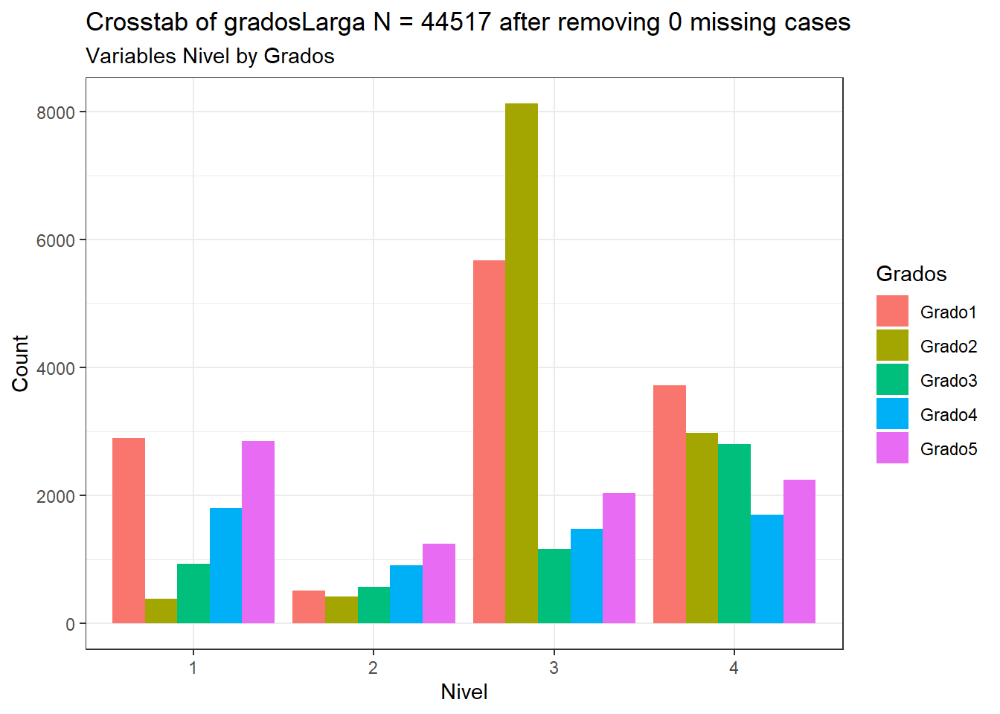
CGPfunctions::PlotXTabs(gradosLarga, Nivel, Grados)Plotted dataset gradosLarga variables Nivel by Grados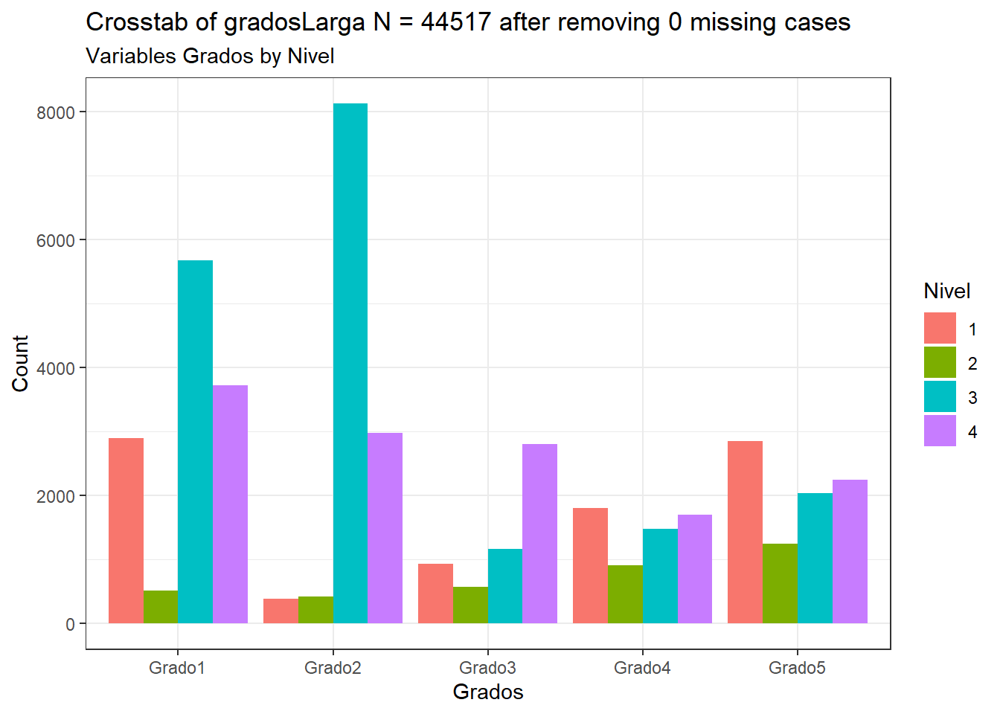
# Gráfico para el estudio de treatment vs improvement
CGPfunctions::PlotXTabs(dataMejora, treatment, improvement)Plotted dataset dataMejora variables treatment by improvement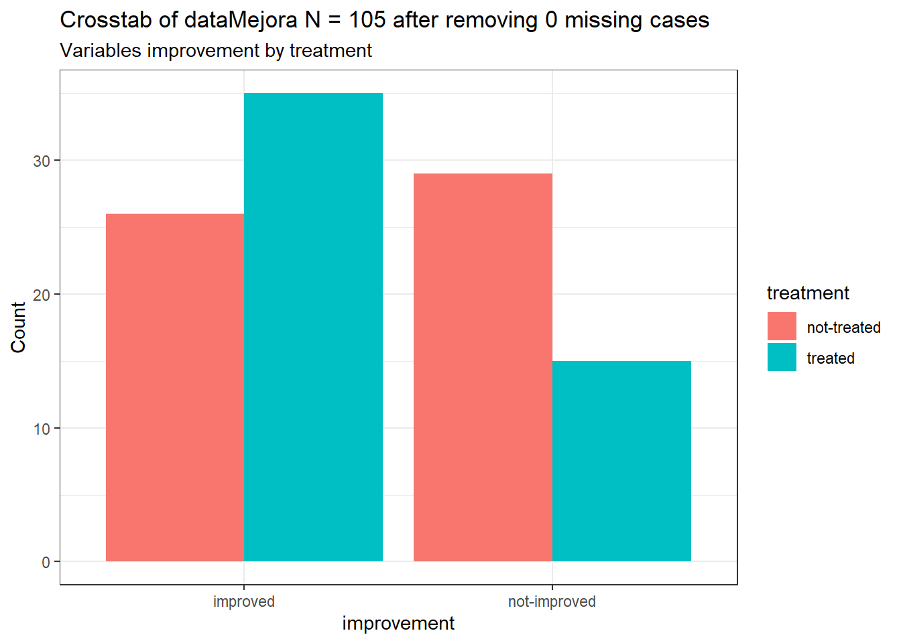
Puedes cambiar el argumento plottype = para cambiar rápidamente la forma del gráfico:
# Barras apiladas
CGPfunctions::PlotXTabs(gradosLarga, Grados, Nivel, plottype="stack")Plotted dataset gradosLarga variables Grados by Nivel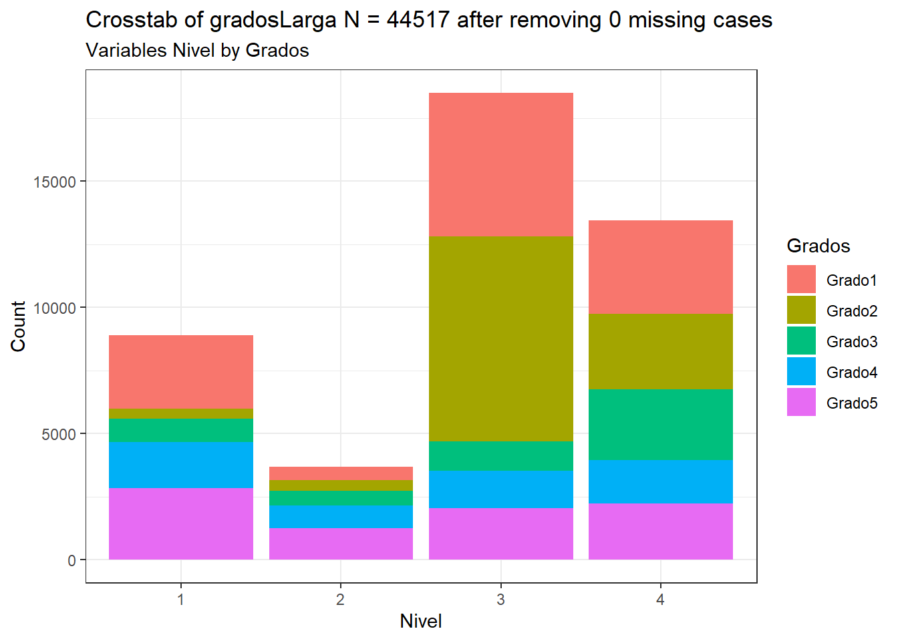
# Barras porcentuales
CGPfunctions::PlotXTabs(gradosLarga, Grados, Nivel, plottype="percent")Plotted dataset gradosLarga variables Grados by Nivel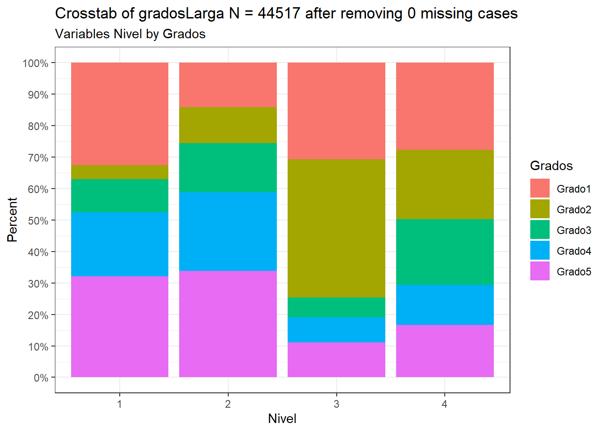